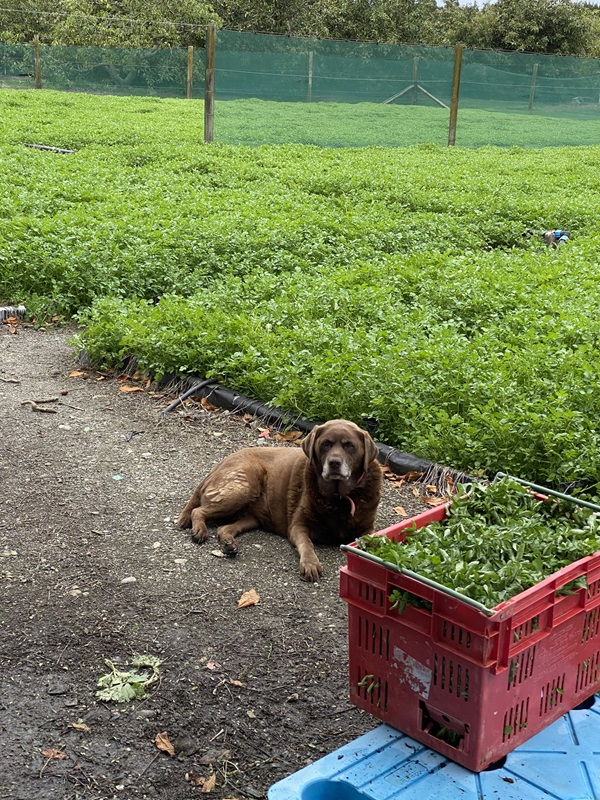

✖
Home
About us
Production
Recipes
Contact us
References
Websites that have been referred to for content:

10 impressive health benefits of Watercress. Healthline
What to know about Watercress. Medical News Today
Watercress. BBC Good Food
Watercress Soup. The Spruce Eats
Watercress and pea soup. BBC Food
Anika’s go-to boil up. New World.
Simple Watercress Salad with Lemon-Dijon Vinaigrette. Food By Mars.
Watercress Soup | The F Word. Gordon Ramsey.
Watercress. Wikipedia.